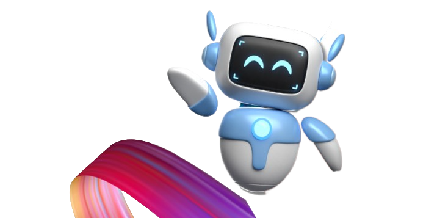

Welcome to the Omdena Local
Chapter at VIT Bhopal!
Join us as we continue to grow and create a better future through the application of AI. Together, we can make a difference!
At Omdena Local Chapter, our mission is to harness the power of artificial intelligence (AI) to create a positive and lasting impact on our local community.
Our primary focus is on driving social impact through AI. We believe in the potential of AI to transform lives, solve complex problems, and create a more equitable society. By bringing together talented individuals from various disciplines, we foster collaboration and innovation to address local issues and develop practical solutions. Our projects are designed to have a tangible impact on the local community, addressing challenges in areas such as healthcare, education, environment, and social justice.
We are committed to the principles of open-source development. Our projects are accessible to everyone, allowing individuals to contribute, learn, and grow within the AI domain. By embracing open- source, we encourage collaboration, knowledge sharing, and transparency. This approach not only amplifies the impact of our projects but also fosters a sense of ownership and empowerment within our community.
Continuous learning and growth are at the core of our mission. We organize workshops, seminars, and networking events to facilitate learning and knowledge exchange. We provide opportunities for our members to enhance their AI skills, expand their professional networks, and stay up-to-date with the latest advancements in the field. Through mentorship and guidance, we strive to create an environment that nurtures personal and professional development.
We strongly believe in the power of community engagement. Our projects are designed in collaboration with local experts, NGOs, and community members. We actively seek input and feedback from the local community to ensure that our solutions are contextually relevant and aligned with the needs of those we aim to serve. By involving the community in the problem-solving process, we foster a sense of ownership, empowerment, and sustainable impact.
Our ultimate goal is to create a local AI ecosystem that promotes collaboration, innovation, and social impact. We envision a future where AI is not only a technological tool but also a force for positive change. Through our projects, workshops, and networking events, we aim to build a vibrant AI community that inspires and supports individuals to explore AI's potential for social good.
Our primary focus is on driving social impact through AI. We believe in the potential of AI to transform lives, solve complex problems, and create a more equitable society.
.png)
We are committed to the principles of open-source development. Our projects are accessible to everyone, allowing individuals to contribute, learn, and grow within the AI domain.
.png)
Continuous learning and growth are at the core of our mission. We organize workshops, seminars, and networking events to facilitate learning and knowledge exchange.
.png)
We strongly believe in the power of community engagement. Our projects are designed in collaboration with local experts, NGOs, and community members.
.png)
Our ultimate goal is to create a local AI ecosystem that promotes collaboration, innovation, and social impact.
As an initiative of Omdena, a global community connecting data scientists, engineers, and experts worldwide, we strive to leverage our collective knowledge and expertise to tackle pressing social challenges through open-source projects.

In the 1980s, the Bhopal region experienced one of the worst industrial disasters of release of toxic chemicals from the Union Carbide India Limited (UCIL) pesticide plant. The catastrophe raised awareness about industrial pollution. The water quality of the lakes in Bhopal has been significantly impacted by the 1984 gas tragedy. In the years that followed, the Bhopal region dealt with environmental challenges, particularly regarding water quality. Therefore, we plan to check what are the impacts of this Gas Tragedy using GIS Technique and Satellite Imagery.

Current practices of performing road inspections are time-consuming and labour-intensive. Road surfaces degrade on a daily basis as a result of the heavy traffic on them. This will not only impact the driver’s comfort but will also impact economic efficiency. To maintain roads as efficiently as possible, municipalities perform regular inspections.
we plan to check what are the impacts of this Gas Tragedy using GIS Technique and Satellite Imagery.
To maintain roads as efficiently as possible, municipalities perform regular inspections.
By joining the Omdena VIT Bhopal Chapter, you become part of a global community of AI engineers working collaboratively to build real- world solutions. Omdena's mission is to provide a platform for engineers like you to contribute to global challenges. With a remarkable track record of over 535 projects in partnership with 200+ organizations worldwide, Omdena has made a significant impact, from detecting wildfires in Brazil to fighting malaria outbreaks in Africa and improving solar adoption in Singapore.
Learning and Growth
Community Engagement
Tackle Real World Problems

By joining the Omdena VIT Bhopal Chapter, you become part of a global community of AI engineers working collaboratively to build real- world solutions. Omdena's mission is to provide a platform for engineers like you to contribute to global challenges.